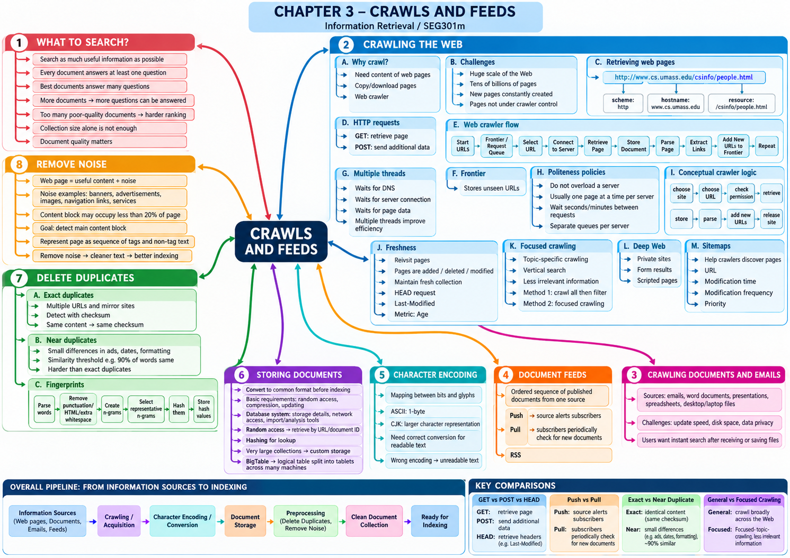

Tài liệu gốc: Slide bài giảng SEG301m Chương 3, "Crawls and Feeds" (33 slide)
Cách đọc: Chương này sẽ dễ nắm bắt nhất khi bạn theo dõi tuần tự 4 bước: "phát hiện tài liệu", "thu thập an toàn và lịch sự", "chuyển đổi và lưu trữ bền vững", và "loại bỏ trùng lặp cùng nhiễu nội dung".
Mục tiêu của chương
Sau khi học xong chương này, bạn có thể giải thích các nội dung sau:
- So sánh sự khác biệt giữa các phương thức thu thập Web, tài liệu nội bộ, email và feednguồn cấp.
- Nêu rõ lý do cần thu thập song song đa luồng, politeness policychính sách lịch sự freshnessđộ mới.
- So sánh sự khác biệt giữa các phương thức thu thập Web, tài liệu nội bộ, feednguồn cấp.
- Trình bày các nguyên lý cơ bản về bảng mã ký tự, lưu trữ tài liệu quy mô lớn, loại bỏ trùng lặp và loại bỏ nhiễu.
SLIDE NGUỒN 1-3

Kiến thức cần chuẩn bị
Ở Chương 2, chúng ta đã biết thu thập văn bản là cửa ngõ đầu vào của công cụ tìm kiếm. Chương này sẽ đi sâu vào cơ chế hoạt động của cửa ngõ đó:
- Inverted indexChỉ mục đảo: Cấu trúc tra cứu tài liệu từ từ ngữ. Các fingerprintdấu vân tay phát hiện trùng lặp cũng có thể lưu trong cấu trúc này.
- CrawlerTrình thu thập: Chương trình tự động phát hiện và tải các trang Web hoặc tệp tin.
- FreshnessĐộ mới: Mức độ dữ liệu trong hệ thống phản ánh kịp thời các thay đổi trên thực tế.
- Inverted indexChỉ mục đảo: Cấu trúc tra cứu tài liệu từ từ ngữ. Các dấu vân tay (fingerprint) phát hiện trùng lặp cũng có thể lưu trong cấu trúc này.
3.1 Những gì nên đưa vào phạm vi tìm kiếm
SLIDE NGUỒN 4
Slide đề cập đến ý tưởng "thu thập mọi thứ có thể". Việc thêm một tài liệu mới có thể giúp hệ thống trả lời được câu hỏi mà trước đó chưa có tài liệu nào đáp ứng được. Tuy nhiên, nếu đưa vào quá nhiều tài liệu rác và chất lượng kém, gánh nặng cho thuật toán xếp hạng sẽ tăng lên rất nhiều.
| Lợi ích khi thêm tài liệu | Thách thức nảy sinh |
|---|---|
| Mở rộng phạm vi câu hỏi có thể trả lời | Tài liệu rác và trùng lặp làm tăng ứng viên gây nhiễu |
| Lưu giữ được các thông tin hiếm và ngách | Tốn thêm dung lượng lưu trữ và thời gian tính toán |
| Cung cấp thông tin cập nhật mới nhất | Khó khăn hơn trong việc đưa tài liệu thực sự tốt lên đầu |
Vì vậy, hệ thống không chỉ chạy theo số lượng thu thập mà phải cân nhắc đồng thời giữa chất lượng, độ mới, tỷ lệ trùng lặp và chi phí tài nguyên thu thập.
3.2 Thu thập trang Web
SLIDE NGUỒN 5-8
Vì sao phải sao chép dữ liệu Web
Để người dùng có thể tìm kiếm tức thì, hệ thống phải tải nội dung các trang về máy chủ của mình trước. Quá trình phát hiện và tải trang này gọi là crawlingthu thập web, và chương trình thực hiện gọi là web crawlertrình thu thập web (hay spider / bot).
Hai khó khăn mang tính bản chất:
- Quy mô Web lên tới hàng chục tỷ trang và liên tục có các trang mới được tạo ra mỗi giây.
- Các trang nằm trên máy chủ của bên thứ ba, ngoài tầm kiểm soát của công cụ tìm kiếm, do đó thường xuyên xảy ra tình trạng trang biến mất, sửa đổi hoặc phản hồi chập chờn.
Cấu trúc của URL
SLIDE NGUỒN 6
URL là định danh duy nhất cho một tài nguyên mạng. Ví dụ http://www.cs.umass.edu/csinfo/people.html gồm ba phần:
| Thành phần | Ví dụ | Ý nghĩa |
|---|---|---|
| Giao thức (scheme) | http |
Phương thức giao tiếp để lấy tài nguyên |
| Tên máy chủ (hostname) | www.cs.umass.edu |
Tên máy chủ lưu trữ trang Web |
| Đường dẫn tài nguyên (resource path) | /csinfo/people.html |
Đường dẫn tệp hoặc tài nguyên cụ thể trên máy chủ |
Mặc dù URL là định danh cơ bản, trong thực tế nhiều URL khác nhau có thể trỏ về cùng một nội dung giống hệt nhau.
Giao thức HTTP: Phương thức GET và POST
SLIDE NGUỒN 7
- GETGET: Yêu cầu máy chủ gửi về nội dung của tài nguyên được chỉ định. Đây là phương thức chủ yếu mà crawler sử dụng.
GET /csinfo/people.html HTTP/1.0
- POSTPOST: Gửi dữ liệu bổ sung lên máy chủ, thường dùng cho việc bấm nút thanh toán, gửi biểu mẫu hoặc cập nhật trạng thái. Crawler thông thường tuyệt đối không được tự tiện gửi lệnh POST bừa bãi vì có thể gây biến đổi dữ liệu ngoài ý muốn trên máy chủ mục tiêu.
Lần theo liên kết
SLIDE NGUỒN 8
Crawler tải một trang Web về và bóc tách các liên kết siêu văn bản trong trang đó. Các liên kết có thể trỏ tới các trang trong cùng máy chủ hoặc trỏ ra máy chủ bên ngoài. Bằng cách đưa các URL mới phát hiện vào danh sách xử lý tiếp, crawler dần mở rộng đồ thị liên kết trên toàn Web.
3.3 Thiết kế trình thu thập
SLIDE NGUỒN 9-11
Hàng đợi Frontier
Frontier là hàng đợi lưu trữ các URL đã được phát hiện nhưng chưa được tải về. Nếu chỉ dùng một hàng đợi đơn giản vào-trước-ra-trước (FIFO), crawler sẽ rất dễ gửi hàng loạt yêu cầu liên tiếp tới cùng một máy chủ trong thời gian ngắn, gây nghẽn mạng cục bộ.
Vì sao bắt buộc phải dùng đa luồng (Multi-threading)
SLIDE NGUỒN 9
Một luồng tải trang đơn lẻ tốn phần lớn thời gian vào việc chờ đợi (I/O wait):
- Chờ máy chủ DNS phân giải tên miền.
- Chờ thiết lập kết nối TCP và bắt tay HTTP với máy chủ.
- Chờ nhận dữ liệu phản hồi truyền qua mạng.
Nếu sử dụng kiến trúc đa luồng, trong lúc một luồng đang chờ máy chủ A phản hồi, các luồng khác có thể kết nối và tải trang từ máy chủ B, C. Nhờ đó, thông lượng tổng thể của hệ thống tăng lên hàng trăm lần. Tuy nhiên, việc tăng số luồng phải có giới hạn để không gây quá tải mạng nội bộ và máy chủ đối tác.
Chính sách lịch sự (Politeness policy)
SLIDE NGUỒN 10
Politeness policyChính sách lịch sự là tập hợp các quy tắc nhằm bảo vệ máy chủ của trang web khỏi nguy cơ bị nghẽn do crawler:
- Không gửi nhiều yêu cầu đồng thời tới cùng một máy chủ.
- Giữ khoảng cách tối thiểu vài giây giữa hai lần yêu cầu liên tiếp tới cùng một máy chủ.
- Phân chia frontier thành các hàng đợi logic riêng biệt cho từng máy chủ (per-host queues).
Vòng lặp của một luồng Crawler
SLIDE NGUỒN 11
procedure CRAWLERTHREAD(frontier)
while not frontier.done() do
website <- frontier.nextSite()
url <- website.nextURL()
if website.permitsCrawl(url) then
text <- retrieveURL(url)
storeDocument(url, text)
for each foundUrl in parse(text) do
frontier.addURL(foundUrl)
end for
end if
frontier.releaseSite(website)
end while
end procedure
Các bước thực thi:
- Lấy một website sẵn sàng xử lý từ frontier.
- Rút ra một URL tiếp theo của website đó.
- Kiểm tra xem URL có được phép thu thập hay không (
permitsCrawl). - Tải nội dung trang và lưu trữ vào kho dữ liệu.
- Phân tích nội dung để trích xuất các URL mới và thêm vào frontier.
- Giải phóng trạng thái khóa của website (
releaseSite) để các luồng sau có thể phục vụ website này khi đủ thời gian giãn cách.
Xem đáp án gợi ý
Website đó sẽ bị khóa vĩnh viễn ở trạng thái "đang được một luồng xử lý". Hậu quả là hàng đợi chứa toàn bộ các URL còn lại của website đó sẽ không bao giờ được cấp phép cho luồng nào lấy ra nữa, khiến crawler bỏ sót các trang tiếp theo của trang web.
3.4 Độ mới và Quá trình thu thập lại
SLIDE NGUỒN 12-15
Vì sao phải thu thập lại một trang web đã có
Các trang Web liên tục được thêm mới, sửa đổi hoặc xóa bỏ. Nếu crawler không quay lại thu thập định kỳ, bản sao lưu trong chỉ mục sẽ trở nên lỗi thời so với thực tế. Mục tiêu của việc thu thập lại (re-crawling) là duy trì freshnessđộ mới cho bộ sưu tập.
Yêu cầu HEAD và Tiêu đề Last-Modified
SLIDE NGUỒN 13-14
Phương thức HTTP HEADHEAD yêu cầu máy chủ chỉ gửi về các dòng tiêu đề (header) mà không gửi phần thân (body) của tài liệu. Bằng cách kiểm tra trường Last-Modified, crawler biết được thời điểm trang được cập nhật lần cuối:
HEAD /csinfo/people.html HTTP/1.1
Host: www.cs.umass.edu
Phương pháp này tiết kiệm băng thông mạng rất lớn so với việc tải lại toàn bộ nội dung. Tuy nhiên, không phải máy chủ nào cũng cấu hình trả về trường Last-Modified một cách chuẩn xác.
Chỉ số Age (Độ cũ của bản sao lưu)
SLIDE NGUỒN 15
Hãy hình dung trục thời gian cụ thể:
| Mốc thời gian | Sự kiện diễn ra | Trạng thái bản sao lưu trong máy tìm kiếm |
|---|---|---|
| Ngày 0 (09:00) | Crawler tải trang web về | Bản sao hoàn toàn mới (khớp thực tế) |
| Ngày 2 (09:00) | Trang gốc trên web bị sửa đổi | Bản sao bắt đầu bị cũ từ thời điểm này |
| Ngày 7 (09:00) | Crawler quay lại quét và tải bản mới | Bản sao được cập nhật lại thành mới |
Trong ví dụ này: Thời gian kể từ lần quét trước là 7 ngày. Nhưng khoảng thời gian hệ thống lưu giữ bản sao cũ chỉ kéo dài từ lúc trang bị đổi (Ngày 2) đến khi crawler quét lại (Ngày 7), tức là 5 ngày. Cần phân biệt rõ hai khái niệm này để hiểu đúng công thức Age.
Chỉ số Age biểu thị: "Kỳ vọng về khoảng thời gian trung bình mà hệ thống lưu giữ một bản sao cũ nếu trang có sự thay đổi giữa hai lần quét cách nhau khoảng thời gian t". Vì thời điểm trang bị thay đổi là ngẫu nhiên, ta phải tính giá trị kỳ vọng toán học:
t: thời gian từ lần thu thập cuối đến khi thu thập lại (đơn vị ví dụ là ngày).x: thời điểm trang xuất hiện lần thay đổi đầu tiên kể từ lần thu thập trước (0 ≤ x ≤ t).t - x: khoảng thời gian hệ thống lưu giữ bản sao cũ (từ lần đổi đầu tiên đến khi thu thập lại).λ: tốc độ thay đổi trên một đơn vị thời gian (ví dụ: số lần đổi trên mỗi ngày).λe^{-λx}: hàm mật độ xác suất biểu diễn khả năng lần thay đổi đầu tiên xảy ra tại thời điểmxtheo phân phối Poisson/mũ.
Nếu trong khoảng t trang không đổi lần nào thì bản sao không bị cũ, đóng góp bằng 0. Nếu trang thay đổi nhiều lần thì bản sao đã bị cũ ngay từ lần thay đổi đầu tiên x. Do đó, công thức này tính từ thời điểm đổi đầu tiên x cho tới khi thu thập lại, chứ không tính lại từ đầu sau mỗi lần thay đổi tiếp theo.
Con số 2.58 ngày không có nghĩa là "trang đã được thu thập từ 2.58 ngày trước", mà là thời gian lưu giữ bản sao cũ tính trung bình cho mọi khả năng (bao gồm cả trường hợp trang không hề thay đổi). Vì xác suất trang thay đổi ít nhất một lần trong vòng 7 ngày là 1 - e^-1 ≈ 0.632, nên giá trị trung bình này nhỏ hơn con số 5 ngày trong ví dụ cố định ở trên (vốn giả định chắc chắn có thay đổi ở ngày thứ 2).
Xem công thức rút gọn tích phân
Bằng phương pháp tích phân từng phần, công thức tổng quát rút gọn thành:
Số hạng đầu t trừ đi phần tương ứng với thời gian chờ kỳ vọng cho đến khi có thay đổi. Nếu chu kỳ t càng ngắn thì khả năng thu thập lại trước khi có thay đổi càng cao, và chỉ số Age sẽ càng nhỏ.
Nói chính xác hơn: Công thức này giả định các thay đổi tuân theo một quá trình Poisson với tốc độ không đổi λ. Đối với các trang cập nhật theo lịch cố định (như mỗi buổi sáng hoặc mỗi thứ Hai hàng tuần), hay các trang tin tức có lượng cập nhật tăng đột biến khi xảy ra sự kiện, các mô hình khác có thể sẽ phù hợp hơn.
Xem đáp án gợi ý
Thời gian kể từ lần thu thập cuối là 7 ngày. Bản sao bắt đầu bị cũ sau lần thay đổi vào ngày thứ 6, do đó thời gian hệ thống lưu giữ bản sao cũ là 7 - 6 = 1 ngày.
3.5 Thu thập theo chủ đề, Deep Web và Sitemap
SLIDE NGUỒN 16-18
Thu thập theo chủ đề (Focused crawling)
Focused crawlingThu thập theo chủ đề ưu tiên thu thập các trang thuộc một chủ đề cụ thể (như điện ảnh, y khoa, tài chính). Nhờ loại bớt các trang không liên quan ngay từ khâu thu thập, hệ thống tiết kiệm băng thông và đạt độ chính xác cao hơn cho các công cụ tìm kiếm chuyên ngành.
So sánh hai phương pháp tiếp cận:
| Phương pháp | Ưu điểm | Vấn đề / Hạn chế |
|---|---|---|
| Thu thập toàn bộ Web rồi lọc bỏ sau | Có thể trì hoãn việc phán đoán về sau | Tốn lượng lớn băng thông và dung lượng lưu trữ, phần lớn dữ liệu bị loại bỏ |
| Đánh giá độ liên quan trước và sau khi tải trang | Giảm thiểu các trang không cần thiết | Đòi hỏi cơ chế tự động đánh giá trang có thuộc đúng chủ đề hay không |
Deep Web (Web ẩn)
SLIDE NGUỒN 17
Slide định nghĩa deep webweb ẩn là vùng thông tin rộng lớn mà crawler thông thường không thể tự tìm tới bằng cách lần theo liên kết tĩnh:
- Các trang yêu cầu đăng nhập mật khẩu hoặc phân quyền nội bộ.
- Dữ liệu nằm trong cơ sở dữ liệu, chỉ xuất hiện sau khi người dùng điền biểu mẫu tìm kiếm.
- Các trang sinh nội dung động hoàn toàn bằng mã JavaScript phía máy khách.
Sơ đồ trang web (Sitemap)
SLIDE NGUỒN 18
Chủ sở hữu trang web có thể dùng sitemap để thông báo cho crawler danh sách các URL, thời điểm cập nhật lần cuối và tần suất cập nhật dự kiến. Sitemap đóng vai trò hỗ trợ khi crawler không thể tự phát hiện toàn bộ các trang chỉ bằng việc lần theo liên kết.
Thông tin trong sitemap hỗ trợ đắc lực cho việc lập lịch phát hiện và ưu tiên thu thập lại, nhưng không trực tiếp đảm bảo thứ hạng tìm kiếm của trang.
3.6 Tài liệu nội bộ và nguồn cấp
SLIDE NGUỒN 19-20
Tài liệu trên máy tính cá nhân và Email
Các tệp Word, bản trình chiếu, bảng tính và email lưu trên máy tính cá nhân đặt ra những yêu cầu đặc thù cho tìm kiếm desktop:
- Tốc độ cập nhật: Người dùng muốn tìm thấy email hoặc tệp vừa lưu gần như ngay lập tức.
- Tiết kiệm dung lượng đĩa: Vì tệp đã nằm sẵn trên hệ thống tệp, hệ thống cần tránh tạo thêm bản sao trùng lặp chiếm bộ nhớ.
- Quyền riêng tư: Xử lý dữ liệu cá nhân nhạy cảm, đòi hỏi kiểm soát quyền truy cập chặt chẽ.
Trong ghi chú của slide, hệ thống tìm kiếm desktop có thể đọc nội dung tệp vào thẳng bộ nhớ RAM và chuyển trực tiếp cho bộ lập chỉ mục mà không cần lưu thêm một bản sao ra ổ cứng.
Nguồn cấp tài liệu (Document Feed)
Nguồn cấp tài liệu (document feed) là cơ chế truyền nhận dữ liệu có thứ tự từ một nguồn phát:
- Push feedNguồn cấp kiểu đẩy: Bên phát hành chủ động gửi thông báo và dữ liệu tài liệu mới ngay khi vừa xuất bản cho các bên đăng ký.
- Pull feedNguồn cấp kiểu kéo: Bên nhận định kỳ gửi yêu cầu thăm dò xem có bài viết mới hay không (tiêu biểu như đọc RSS feed).
Cơ chế đẩy cập nhật nhanh tức thì nhưng đòi hỏi hạ tầng lắng nghe phức tạp. Cơ chế kéo dễ triển khai nhưng nếu thăm dò quá dày sẽ tốn băng thông, thăm dò quá thưa sẽ bị trễ thông tin.
3.7 Bảng mã ký tự và Lưu trữ tài liệu
SLIDE NGUỒN 21-25
Bảng mã ký tự (Character Encoding)
Máy tính biểu diễn chữ viết bằng các chuỗi bit nhị phân thông qua quy tắc ánh xạ gọi là character encodingmã hóa ký tự.
Slide giới thiệu ASCII là chuẩn 1 byte (chỉ biểu diễn được bảng chữ cái tiếng Anh cơ bản), các chuẩn CJK dùng 2 byte cho chữ tượng hình, và bảng mẫu biểu diễn 1 đến 4 byte tương ứng với chuẩn UTF-8.
Nếu nhận diện sai bảng mã, trang web sẽ bị lỗi hiển thị phông chữ (lỗi font/mojibake), dẫn đến việc các từ khóa bị lưu thành các chuỗi byte sai lệch và không thể tìm thấy.
Yêu cầu đối với hệ thống lưu trữ tài liệu
SLIDE NGUỒN 22-24
Phương pháp lưu trữ tài liệu sau chuyển đổi cho tới khi xây dựng chỉ mục cần đáp ứng các yêu cầu sau:
- Random accessTruy cập ngẫu nhiên: Có thể lấy nhanh nội dung văn bản gốc theo URL hoặc mã tài liệu docID để tạo snippetđoạn trích kết quả.
- Nén dữ liệu (compression): Giảm thiểu dung lượng ổ đĩa lưu trữ và băng thông truyền tải mạng.
- Khả năng cập nhật (updating): Dễ dàng phản ánh tài liệu mới thêm vào, các chỉnh sửa hoặc thao tác xóa tài liệu.
Trong desktop searchtìm kiếm trên máy tính cá nhân, vì tệp gốc đã nằm sẵn trên hệ thống tệp nên có thể thiết kế hệ thống mà không cần thêm một kho lưu trữ tài liệu riêng biệt. Để tạo snippetđoạn trích kết quả, hệ thống cần truy cập nhanh vào phần thân tài liệu, và hàm băm từ URL có thể được dùng để tra cứu nhanh vị trí lưu trữ.
Cơ sở dữ liệu và BigTable
SLIDE NGUỒN 23, 25
Cơ sở dữ liệu thông thường rất tốt cho việc lưu trữ dữ liệu nhỏ có cấu trúc. Tuy nhiên, với kho tài liệu Web lên tới hàng tỷ trang, cần đến các hệ thống lưu trữ phân tán chuyên dụng như BigTable của Google.
Trong BigTable, một bảng dữ liệu khổng lồ được chia thành nhiều khối nhỏ gọi là TabletTablet, phân tán và phục vụ trên hàng nghìn máy chủ. Hệ thống tối ưu hóa tối đa cho thao tác đọc/ghi theo từng hàng với tốc độ cực cao, thay vì hỗ trợ các câu lệnh truy vấn quan hệ phức tạp.
3.8 Giảm thiểu trùng lặp tài liệu
SLIDE NGUỒN 26-29
Trùng lặp hoàn toàn (Exact Duplicates)
Khi nhiều URL khác nhau hoặc các trang web nhân bản (mirror site) trả về nội dung y hệt nhau, crawler sẽ tốn tài nguyên nếu lưu trữ nhiều lần. Giá trị kiểm tra checksum được tính toán từ nội dung văn bản để nhận diện các trang trùng nhau 100%.
Slide nêu ví dụ chuỗi Tropical fish tính tổng mã ký tự được giá trị checksum đơn giản là 508. Hai văn bản giống hệt nhau sẽ luôn cho cùng một giá trị checksum.
| Khái niệm | Vai trò trong chương | Phản ứng khi văn bản thay đổi rất nhỏ |
|---|---|---|
| Checksum | Giá trị kiểm tra ngắn kiểm tra lỗi truyền hoặc trùng lặp tuyệt đối | Thường thay đổi giá trị, nhưng dễ xung đột ở hàm đơn giản |
| Hash thông thường | Hàm ánh xạ đầu vào tùy ý thành chuỗi bit độ dài cố định | Thay đổi hoàn toàn dù chỉ đổi 1 ký tự (hiệu ứng tuyết lở) |
| Fingerprint (Dấu vân tay) | Biểu diễn rút gọn giữ lại các đặc trưng cốt lõi của tài liệu | Được thiết kế sao cho hai văn bản gần giống nhau sẽ có fingerprint gần giống nhau |
Khi tìm kiếm sự trùng khớp tuyệt đối, việc đối chiếu giá trị băm mạnh (strong hash) là rất thuận tiện. Trong bài toán trùng lặp gần, vì hàm băm thông thường sẽ biến thành giá trị hoàn toàn khác chỉ sau một chỉnh sửa nhỏ, nên việc chỉ dùng hàm băm thông thường là không đủ; khi đó ta cần dùng fingerprint để giữ lại các đặc trưng của tài liệu.
Trùng lặp gần (Near Duplicates)
SLIDE NGUỒN 27
Nhiều trang web có nội dung bài viết chính giống hệt nhau nhưng chỉ khác nhau ngày tháng, tên tác giả, thanh điều hướng hoặc banner quảng cáo. Chúng là các trang near duplicatetrùng lặp gần (ví dụ giống nhau trên 90% nội dung).
- Kịch bản tìm kiếm (search scenario): So sánh 1 tài liệu mới tải về với
Ntài liệu đã có trong kho, độ phức tạp làO(N). - Kịch bản khám phá (discovery scenario): So sánh từng cặp giữa tất cả các tài liệu trong kho, độ phức tạp là
O(N²).
Nếu có 1.000 tài liệu, số cặp cần so sánh là 1.000 × 999 / 2 = 499.500 cặp. Nếu tăng gấp đôi số tài liệu lên 2.000, số phép so sánh tăng gần gấp 4 lần lên gần 2 triệu cặp. Vì vậy, so sánh từng cặp là bất khả thi trên quy mô lớn, buộc hệ thống phải dùng fingerprint để gom nhóm nhanh các ứng viên nghi ngờ trùng lặp.
Quy trình tạo Fingerprint
SLIDE NGUỒN 28-29
- Tách văn bản thành chuỗi từ, loại bỏ dấu câu, thẻ HTML và khoảng trắng thừa.
- Ghép các từ liên tiếp thành các cụm n-gram.
- Chọn ra tập hợp các n-gram tiêu biểu cho tài liệu.
- Băm các n-gram đã chọn thành các giá trị băm.
- Lưu trữ các giá trị băm vào chỉ mục đảo để tra cứu nhanh.
Quy trình ở Slide 28 là phương pháp tạo fingerprint phổ biến bằng cách chọn các n-gram tiêu biểu rồi lưu giá trị băm của chúng. Slide 29 trình bày một kỹ thuật khác (thuật toán SimHash): kết hợp các giá trị băm của từ có gắn trọng số để tạo thành một chuỗi bit duy nhất. Đừng nhầm lẫn việc chọn n-gram và phép cộng trừ theo từng bit là cùng một bước duy nhất.
Giải thích thêm ngoài slide (Ví dụ 4-bit bổ trợ đọc Slide 29): Các giá trị băm sau đây được giả định nhằm mục đích luyện tập tính toán, không phải lấy từ một hàm băm cụ thể trong thực tế:
| Từ | Trọng số | Giá trị băm 4-bit giả định |
|---|---|---|
fish |
3 | 1010 |
tropical |
1 | 1101 |
tank |
1 | 0110 |
Quy tắc: Tại mỗi vị trí bit, nếu bit là 1 thì cộng trọng số, nếu bit là 0 thì trừ trọng số:
| Từ | Bit 1 | Bit 2 | Bit 3 | Bit 4 |
|---|---|---|---|---|
fish (trọng số 3, mã 1010) |
+3 | -3 | +3 | -3 |
tropical (trọng số 1, mã 1101) |
+1 | +1 | -1 | +1 |
tank (trọng số 1, mã 0110) |
-1 | +1 | +1 | -1 |
| Tổng từng cột | +3 | -1 | +3 | -3 |
| Quy đổi dấu thành bit | 1 | 0 | 1 | 0 |
Cột có tổng dương nhận giá trị bit 1, cột có tổng âm nhận giá trị bit 0. Dấu vân tay 4-bit thu được là 1010. Trong trường hợp tổng cột bằng 0, quá trình triển khai thực tế cần có quy tắc quy định trước sẽ gán bit 0 hay bit 1.
Slide 29 áp dụng nguyên lý tương tự với chuỗi 8-bit cho câu Tropical fish include ..., dùng tần suất từ làm trọng số. Vector tổng các cột thu được là 1, -5, 9, -9, 3, 1, 3, 3. Chuyển các cột dương thành 1 và cột âm thành 0, ta được fingerprint 8-bit 10101111.
Xem đáp án gợi ý
Khi trọng số của fish là 1, phần đóng góp của fish đổi thành (+1, -1, +1, -1). Tổng các cột khi đó lần lượt là (+1, +1, +1, -1). Sau khi quy đổi dấu (dương thành 1, âm thành 0), fingerprint mới thu được là 1110. Việc thay đổi trọng số làm thay đổi mức độ ảnh hưởng của từ thường gặp đối với quyết định biểu quyết đa số ở từng bit.
3.9 Loại bỏ nhiễu (Noise Removal)
SLIDE NGUỒN 30-31
Trang Web thường chứa rất nhiều thành phần ngoài nội dung chính: banner quảng cáo, menu điều hướng, chân trang, thanh chia sẻ mạng xã hội. Ở Slide 30, khối nội dung hữu ích thực tế chiếm chưa đầy 20% diện tích trang, hơn 80% còn lại là nhiễu đối với bài toán tìm kiếm.
Phát hiện vùng văn bản chính dựa trên chuỗi thẻ
Slide 31 mô hình hóa trang Web thành một chuỗi token và dùng chuỗi bit nhị phân để đánh dấu:
b_n = 1: token thứnlà một thẻ HTML.b_n = 0: token thứnlà văn bản nội dung.N: tổng số lượng token của trang.
Vùng nội dung chính ứng viên nằm trong đoạn chỉ số [i, j]. Mục tiêu là tìm đoạn [i, j] làm cực đại hóa hàm mục tiêu:
Ý nghĩa công thức: Điểm số sẽ cao nhất khi bên ngoài đoạn [i, j] chứa nhiều thẻ HTML nhất (đầu trang và chân trang), đồng thời bên trong đoạn [i, j] chứa nhiều token văn bản nhất.
| Vị trí token | 0 | 1 | 2 | 3 | 4 | 5 | 6 | 7 | 8 | 9 | 10 | 11 |
|---|---|---|---|---|---|---|---|---|---|---|---|---|
| Token | <nav> |
Home | </nav> |
<p> |
Search | engines | help | users | </p> |
<footer> |
Contact | </footer> |
Giá trị b_n |
1 | 0 | 1 | 1 | 0 | 0 | 0 | 0 | 1 | 1 | 0 | 1 |
So sánh hai đoạn ứng viên: Ứng viên A là mục menu [1, 1], Ứng viên B là đoạn văn bản chính [4, 7]:
| Ứng viên | Số thẻ trước đoạn | Số chữ trong đoạn | Số thẻ sau đoạn | Tổng điểm |
|---|---|---|---|---|
A: [1, 1] (Menu) |
1 | 1 | 5 | 7 |
B: [4, 7] (Nội dung) |
3 | 4 | 3 | 10 |
Ứng viên B chứa 4 từ văn bản liên tục và được bao bọc bởi nhiều thẻ định dạng ở hai phía nên đạt điểm số 10, vượt trội so với Ứng viên A (7 điểm). Hệ thống xác định chính xác B là vùng nội dung bài viết cần giữ lại.
Nếu duyệt ngây thơ mọi cặp [i, j], số đoạn cần kiểm tra là N(N+1)/2 (độ phức tạp O(N²)). Tuy nhiên, bằng kỹ thuật mảng cộng dồn (prefix sum), bài toán có thể tối ưu hóa để tìm ra lời giải trong độ phức tạp tuyến tính O(N).
Bài tập cuối chương
SLIDE NGUỒN 14, 32
Bài tập 1: Kiểm tra cập nhật tài nguyên bằng yêu cầu HEAD
Thực hiện gửi yêu cầu HTTP HEAD tới một số URL thử nghiệm và đọc các trường tiêu đề như Last-Modified, Content-Length, ETag.
Bài tập 2: Lập trình luồng Crawler cơ bản
Dựa vào mã giả ở Slide 11, lập trình một module crawler đơn giản.
Các yêu cầu an toàn bắt buộc:
- Giới hạn tên miền mục tiêu và số lượng trang tối đa được quét.
- Sử dụng cấu trúc dữ liệu tập hợp (Set) để lưu các URL đã quét, tránh quét lặp.
- Đặt thời gian nghỉ tối thiểu giữa các lần gửi yêu cầu tới cùng một máy chủ (politeness).
- Xử lý các trường hợp ngoại lệ: kết nối mạng quá hạn (timeout), lỗi HTTP 404/500, tệp không phải văn bản.
- Chỉ thử nghiệm trên các trang do chính bạn quản lý hoặc các trang được phép thử nghiệm thực hành.
Đây là các điều kiện phụ trợ để thực hành an toàn và là phần bổ sung cho đề bài gốc trong slide.
Tổng kết
SLIDE NGUỒN 33 (và toàn bộ slide 1-32)
- Web crawler quản lý các URL phát hiện được qua hàng đợi frontier, tải nội dung và trích xuất các liên kết mới.
- Kiến trúc đa luồng giúp che giấu độ trễ mạng, nhưng phải tuân thủ politeness policychính sách lịch sự để bảo vệ máy chủ nguồn.
- Thu thập lại định kỳ, khai thác yêu cầu HEAD và sơ đồ sitemap là những công cụ giúp bảo đảm độ mới cho dữ liệu.
- Tài liệu nội bộ, email và feednguồn cấp có các đặc tính vận hành khác biệt so với thu thập web mở.
- Bảng mã ký tự cần được chuẩn hóa đồng nhất về Unicode/UTF-8; hệ thống lưu trữ phải đáp ứng truy cập ngẫu nhiên, nén và cập nhật.
- Checksum, SimHashSimHash và thuật toán phát hiện vùng văn bản chính giúp loại trừ trùng lặp và lọc sạch nhiễu nội dung.
Câu hỏi tự kiểm tra
- Vì sao không phải cứ tăng số lượng tài liệu thu thập là chất lượng tìm kiếm sẽ tự động tăng theo?
- Hàng đợi frontier trong crawler dùng để lưu trữ đối tượng nào?
- Lý do chính khiến crawler bắt buộc phải sử dụng kiến trúc đa luồng là gì?
- Politeness policyChính sách lịch sự được thiết kế nhằm bảo vệ đối tượng nào?
- Yêu cầu HTTP HEAD hỗ trợ khâu quyết định thu thập lại trang như thế nào?
- Sự khác biệt cốt lõi giữa focused crawling và phương pháp "thu thập toàn bộ rồi lọc sau" là gì?
- Cơ chế push feednguồn cấp kiểu đẩy và pull feednguồn cấp kiểu kéo khác nhau như thế nào?
- Vì sao phương pháp phát hiện trùng lặp hoàn toàn và trùng lặp gần lại sử dụng kỹ thuật khác nhau?
- Trong công thức loại bỏ nhiễu, số hạng ở giữa
Σ (1 - b_n)đo lường đại lượng gì? - Trong chỉ số Age, tham số
tvà biểu thứct - xkhác nhau như thế nào? - Checksum, hàm băm thông thường và fingerprint (dấu vân tay) ưu tiên những mục tiêu gì?
Xem đáp án gợi ý
- Vì nếu thu thập thêm nhiều tài liệu rác và trùng lặp, dung lượng lưu trữ tăng lên và gánh nặng của thuật toán xếp hạng cũng tăng theo, khiến việc đưa tài liệu thực sự giá trị lên đầu trở nên khó khăn hơn.
- Frontier lưu trữ các URL đã được phát hiện từ các trang trước nhưng chưa được tải về máy chủ.
- Vì một luồng đơn lẻ mất phần lớn thời gian chờ DNS, bắt tay kết nối và truyền dữ liệu qua mạng; đa luồng giúp tận dụng thời gian chờ để tải song song các máy chủ khác, nâng cao thông lượng hệ thống.
- Bảo vệ máy chủ của các trang web mục tiêu khỏi nguy cơ bị nghẽn mạng hoặc sập dịch vụ do nhận quá nhiều yêu cầu dồn dập.
- HEAD chỉ tải về tiêu đề HTTP chứa thông tin như
Last-Modified, giúp crawler biết trang có thay đổi hay không mà không tốn băng thông tải toàn bộ thân bài viết. - Focused crawling đánh giá và quyết định độ liên quan của trang ngay tại thời điểm thu thập để không tải trang rác; còn phương pháp kia tải bừa bãi toàn bộ rồi sau đó mới tốn công sàng lọc và vứt bỏ.
- Push là bên phát hành chủ động gửi dữ liệu ngay khi có bài mới; Pull là bên nhận phải định kỳ chủ động gửi yêu cầu thăm dò xem có bài mới hay không.
- Trùng lặp hoàn toàn chỉ cần so khớp chính xác mã băm là đủ; trùng lặp gần đòi hỏi các biểu diễn giữ lại đặc trưng cốt lõi (như SimHash) cho phép chấp nhận các sai lệch nhỏ về mặt chữ.
- Đo lường số lượng token văn bản (không phải thẻ HTML) nằm bên trong phân đoạn ứng viên
[i, j]. tlà tổng thời gian từ lần quét trước đến lần quét lại; cònt - xlà khoảng thời gian bản sao trong hệ thống thực sự bị cũ (tính từ thời điểm trang gốc bị đổixđến thời điểm quét lạit).- Checksum ưu tiên kiểm tra lỗi toàn vẹn hoặc khớp chính xác; hàm băm thông thường ưu tiên ánh xạ nhanh và phân tán ngẫu nhiên; fingerprint ưu tiên bảo toàn khoảng cách ngữ nghĩa giữa các văn bản gần giống nhau.
Bảng thuật ngữ
| English | Tiếng Việt | Ý nghĩa trong chương này | Slide nguồn |
|---|---|---|---|
| Crawling | Thu thập Web / Crawling | Quá trình phát hiện và tải về các trang web | 5 |
| Web crawler | Trình thu thập Web | Chương trình tự động lần theo liên kết để thu thập trang | 5, 8–11 |
| URL | URLURL | Chuỗi ký tự định danh duy nhất một tài nguyên trên mạng | 6 |
| Scheme | Giao thức URL (Scheme) | Thành phần xác định phương thức giao tiếp (như http, https) | 6 |
| Hostname | Tên máy chủ | Thành phần xác định máy tính cung cấp dịch vụ web | 6 |
| GET | Yêu cầu GET | Phương thức HTTP yêu cầu lấy dữ liệu tài nguyên về máy | 7 |
| POST | Yêu cầu POST | Phương thức HTTP gửi dữ liệu bổ sung lên máy chủ | 7 |
| Frontier | Hàng đợi biên / frontierhàng đợi biên | Hàng đợi quản lý danh sách các URL đang chờ thu thập | 9–11 |
| Thread | Luồng xử lý | Đơn vị thực thi độc lập bên trong tiến trình máy tính | 9, 11 |
| Politeness policy | Chính sách lịch sự | Quy định giãn cách yêu cầu để tránh gây quá tải máy chủ đối tác | 10 |
| Revisit | Thu thập lại / revisit | Quá trình crawler quay lại kiểm tra trang web đã thu thập từ trước | 12 |
| HEAD | Yêu cầu HEAD | Phương thức HTTP chỉ tải về tiêu đề không tải phần thân | 13–14 |
| Last-Modified | Thời điểm cập nhật cuối | Trường tiêu đề HTTP phản ánh thời điểm sửa trang web | 13 |
| Age | Chỉ số Age | Kỳ vọng thời gian lưu giữ bản sao cũ khi trang có thay đổi | 15 |
| Focused crawling | Thu thập theo chủ đề | Chiến lược thu thập ưu tiên các trang thuộc một miền chủ đề | 16 |
| Deep Web | Deep webWeb ẩn | Vùng dữ liệu khó tiếp cận bằng cách lần liên kết thông thường | 17 |
| Sitemap | Sơ đồ trang / sitemap | Tệp XML thông báo cấu trúc URL và tần suất cập nhật trang | 18 |
| Push feed | Nguồn cấp kiểu đẩy | Cơ chế bên phát hành chủ động gửi nội dung mới cho bên nhận | 20 |
| Pull feed | Nguồn cấp kiểu kéo | Cơ chế bên nhận định kỳ gửi yêu cầu kiểm tra nội dung mới | 20 |
| Character encoding | Character encodingMã hóa ký tự | Quy tắc ánh xạ chuỗi bit nhị phân thành chữ viết hiển thị | 21 |
| Random access | Truy cập ngẫu nhiên | Khả năng đọc thẳng một bản ghi tài liệu mà không cần duyệt tuần tự | 22, 24 |
| Tablet | Tablet | Khối phân vùng dữ liệu nhỏ trong kiến trúc lưu trữ BigTable | 25 |
| Checksum | Mã kiểm tra / checksum | Con số ngắn tính từ nội dung phục vụ kiểm tra trùng lặp | 26 |
| Hash | Hàm băm / giá trị băm | Hàm ánh xạ đầu vào thành chuỗi bit độ dài cố định | 26, 28–29 |
| Near duplicate | Trùng lặp gần | Các tài liệu có nội dung cốt lõi gần như giống hệt nhau | 27 |
| Fingerprint | Dấu vân tay / fingerprint | Chuỗi bit tóm lược đặc trưng phục vụ phát hiện trùng lặp gần | 28–29 |
| Noise | Nhiễu nội dung / loại bỏ nhiễu | Các thành phần ngoài nội dung chính như banner, quảng cáo, menu | 30–31 |